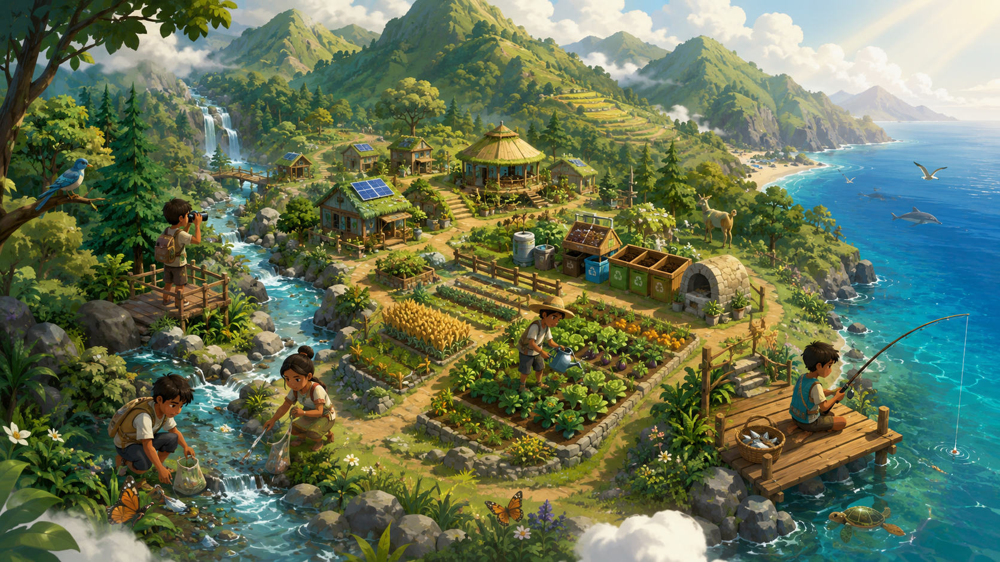

透過溪流清理與分類整理小遊戲，認識垃圾如何影響水域與野生動物。
永續 × 科普 × 養成經營
在遊戲裡學會
在遊戲裡學會
與自然共生
暫名《森循島》是一款以永續教育為核心的養成經營遊戲。玩家在架空的山海島嶼中農耕、採集、釣魚、製作與建設，同時透過小遊戲與知識卡理解垃圾污染、資源節制、水域生態與碳循環等議題。

網站主視覺已改成更貼近計畫書的內容：不強調單一族群符號，而是以臺灣山海地景與永續生活情境為主。
15–20 分鐘可試玩原型
3+永續小遊戲
12+科普知識卡
2 場以上試玩／工作坊
首頁總覽
讓玩家感受到「永續」不是口號，而是選擇的結果
遊戲設計從生活情境切入，不讓玩家無限制掠奪資源，而是透過每天的行動、取捨與修復，理解自然承載量與長期共好的重要性。
採集、釣魚、種植都會回應玩家行為，過度採收會讓環境逐步衰退。
以知識卡、任務提示與小挑戰，介紹農耕、野外安全、碳循環與生態觀察。
計畫定位
不是只做遊戲，而是做「遊戲化永續教育行動」
本計畫的成果包含：教育遊戲原型、試玩與工作坊、學習成效評估，以及可公開分享的社會影響成果。官網也因此不只展示美術與玩法，而是同步說明教育目標與執行方法。
網站建議用途
- 比賽報名與提案時，讓評審快速理解計畫重點。
- 對外展示遊戲如何串連永續教育與體驗式學習。
- 後續可再補上工作坊成果、問卷分析、影片與媒體報導。
- 可作為團隊未來申請補助、USR、展演與試玩活動的基礎站點。
玩家旅程
從生活經營到環境守護
玩家的成長不只來自資源累積，而是來自對環境的理解、對節制的練習，以及願意採取修復行動。
01 建立生活
整理田地、播種、收集材料，建立基礎家屋與工作區。
02 探索學習
在山林與溪流情境中接觸知識卡，理解水源、土壤與季節變化。
03 修復守護
處理垃圾、避免過度採集、辨識異常事件，維持島嶼生態平衡。
04 共好循環
當玩家願意休養、修復與分享，環境與社群信任就會變得更穩定。